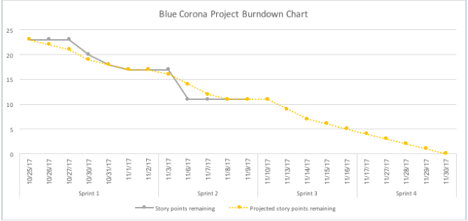
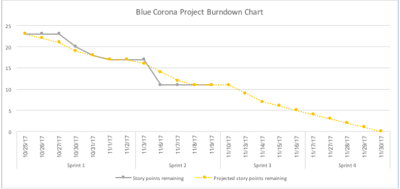

Adanced Software Management
Project Blue Corona
Team: Encouraging-Hero,Zealous-Emu, Blushing Stingray, + one more nickname pending
Sprint completed stories
Novemeber 2, 2017
- As a user, I want to view all of the existing events on a webpage that is clear and informative so that I can stay up to date on my subscriptions (6 points)
- Build NodeJS database
- Deploy to Heroku
- Stylize
Before the sprint, we did an extended sprint planning session to develop a story backlog for the entire Blue Corona project. We mapped each of our key stakeholder’s acceptance (test) criteria into our stories. In this sprint, we developed foundational architecture. We set up the basic front-end business logic to iterate of the list of events currently stored and display their id, title, and location. We also added links and basic routing to the About and Create Events Page and developed a set of external links to custom stylesheets to allow us to further customize/stylize the webapp design. The UI team developed a design concept and began to code this into the header and footer. Heroku went down on 10/31 (Happy Haloween, indeed…) which delayed deployment by a day.
Product backlog (Prioritized)
Sprints 1 and 2 are our heaviest technical sprints to deploy the fundamental technology. In Sprints 3 and 4 we will iterate on our design to meet all of our stakeholder acceptance criteria related to validation and user engagement.Sprint 2
- As a user, I want to create a new event, complete with all necessary details, so that I can invite my friends via valid email address (6 points)
Sprint 3 and 4
- As a user, I want to be able to view event details on a clear and informative page, so that I can know all about the event (6 points)
- As a user, I want to see which events I have subscribed to and have access to more details, so that I can arrive on time (1 point)
- As a user, I should not be able to complete an incomplete or invalid event (1 point)
- As a user, I want the system to validate all of the email addresses from attendees so that no one enters an invalid email (2 points)
- As a user, I want to be able to open and use the websites from any of my devices, so that I can see events from anywhere (points TBD)
- 6. As a user, I want to know who built my website so I can trust them (1 point)
 

Sprint completed stories
- As a user, I want to create a new event, complete with all necessary details, so that I can invite my friends via valid email address (6 points)
Sprint 2 was a heavy technical sprint. We deployed the event creator page and the list of events to the homepage and created several events for testing purposes. We also developed and styled the about page. We made strong progress with the back-end database but it is still buggy. We are having trouble setting up the database but will plan to go to office hours to fix that.
Product backlog (Prioritized)
Sprint 3 requires some potentially significant story redefinition. In sprint 2 we achieved the acceptance criteria for several additional stories, though using the current acceptance criteria from our stakeholders would not meet the story’s intent. (For example: our story “As a user, I want to see which events I have subscribed to and have access to more details, so that I can arrive on time” implies a subscription function, yet our only acceptance criteria are that we have a reachable homepage and a list of events.) We need to define internally whether we want to add additional acceptance criteria to meet the story’s original intent or de-scope the story, based on discussion with key stakeholders.
Sprint 3 and 4
- As a user, I want to be able to view event details on a clear and informative page, so that I can know all about the event (6 points) [May be re-scoped, current acceptance criteria met in sprint 2]
- As a user, I want to see which events I have subscribed to and have access to more details, so that I can arrive on time (1 point) [May be re-scoped, current acceptance criteria met in sprint 2]
- As a user, I should not be able to complete an incomplete or invalid event (1 point)
- As a user, I want the system to validate all of the email addresses from attendees so that no one enters an invalid email (2 points)
- As a user, I want to be able to open and use the websites from any of my devices, so that I can see events from anywhere (points TBD)
- As a user, I want to know who built my website so I can trust them (1 point)
Sprint completed stories
- As a user, I want to be able to open and use the websites from any of my devices, so that I can see events from anywhere (1 point)
- As a user, I want to be able to view event details on a clear and informative page, so that I can know all about the event (6 points)
- As a product owner, I want to be able to understand how my customers are interacting with my website because I will drive more business if I understand where the pain points are (2 points)
Sprint 3 involved major technical project as well as re-scope. We achieved many requirements scheduled for sprint 3 in sprint 2, reducing burden for this task. We also received new requirements from stakeholders. We accepted tasks to this sprint mid-sprint because adding google analytics was an easy lift for the dev team and we wanted to be prepared as soon as the increased traffic arrived to record it. We did not finish one story committed for this sprint ("As a user, I want to know who built my website so that I can trust them") due to unexpected constraints on one dev team member. The story is only worth one point, and we are rolling that into sprint 4.
Product backlog (Prioritized)
We have run into our doom line. Our velocity increased this sprint to 9 points (from 6), but the backlog has grown to 9.5 points, which would be allocated to sprint 4. We think the 9 points we completed this sprint is a bit higher than our steady-state velocity, which is probably closer to 7. We have time between sprint 4 deadline (11/30) and the final project deadline (12/7) to add a sprint 5, which is what we will do to meet the requirements added by our stakeholders this week. (N.b., without the additional requirements from stakeholders we were on-track to finish sprint 4 with 5 points.)
Sprint 4
- As a user, I want to know who built my website so I can trust them (1 point)
- As a user, I want to be able to donate to my favorite charity because it's easiest for me to donate when I have the event right in front of me (3.5 points)
- As a product owner, I want to test multiple versions of my donation link to see what is most effective because I care about maximizing my donation conversion (3 points)
- As a user, I would like to have a structured list of all events so that I can arrive on time (1 point)
Sprint 5
- As a user, I want the system to validate all of the email addresses from attendees so that no one enters an invalid email (2 points)
- As a user, I should not be able to complete an incomplete or invalid event (1 point)